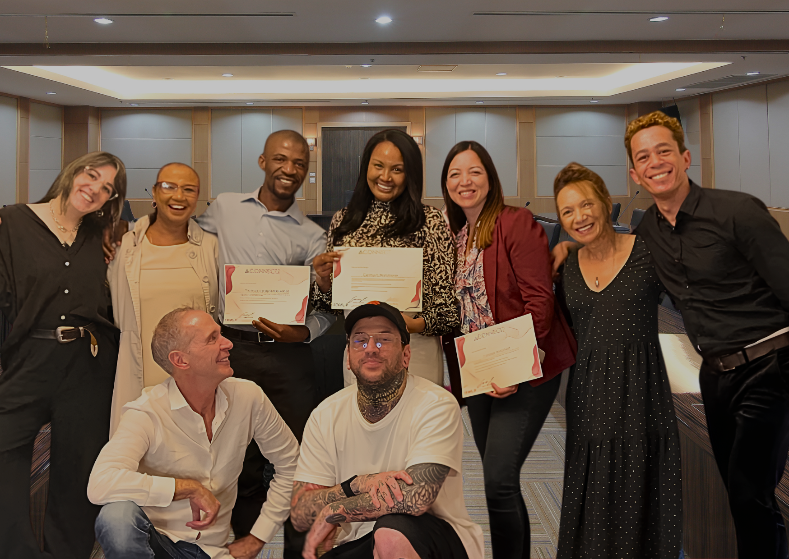

How Human Potential Grows
Helping People • Strengthening Teams • Transforming Organisations.
Explore the different ways we can work together to create meaningful, measurable and lasting outcomes.
The Human Advantage
Technology may shape the future. People will always determine what we do with it.
The world is changing at an extraordinary pace. Artificial intelligence can generate ideas in seconds. Automation has simplified complex tasks and the way we work. Information is available almost instantly. We can collaborate across continents, learn almost anything online and connect with more people than at any other time in history.
To keep up and to thrive in this new world demands curiosity, continuous learning, meaningful collaboration and the willingness to evolve alongside technology. Those who embrace change will help shape the future. Yet despite all of our progress, one truth remains unchanged. People.
Every innovation begins with a person. Every business is built by people. Every team, every family, every community and every organisation depends on people working well together. Think about it,
What would happen if we didn't?
What if leaders couldn't inspire trust?
What if teams stopped collaborating?
What if families stopped communicating?
What if businesses were filled with brilliant individuals who simply couldn't work together?
Technology can accelerate what we do, but it cannot replace the human qualities that make progress possible.
Without people, there would be no purpose for technology.
Without human energy, curiosity, trust, communication and collaboration, there would be no innovation to celebrate, no businesses to grow, no relationships to nurture and no future to build.
The Humanizing Advantage exists to strengthen the one advantage that will always matter most, our ability to understand, connect with and bring out the very best in people.
I Want To…
What would make the biggest difference right now?
Every challenge is different because every person or situation is different. Whether you're leading a business, raising a family, building a team or looking for greater clarity in your own life, my approach is always tailored to your goals, your circumstances and the outcomes that matter most to you.
Corporate Consulting
Build Stronger Teams
Culture, performance, and communication work for teams and organisations.
More Info →Leadership Development
Lead Better
Building leaders who communicate, influence, and decide with clarity.
More Info →Executive Coaching
Find Greater Clarity
One-to-one work for leaders navigating pressure, growth, and change.
More Info →Executive Coaching
Perform Under Pressure
One-to-one work for leaders navigating pressure, growth, and change.
More Info →Relationship Coaching
Strengthen My Relationships
Communication and trust-building for couples and families.
More Info →School Programmes & Youth Development
Raise Confident Young People
Teacher, student and leadership development inside schools, plus confidence, resilience and communication work for teenagers.
School Programmes → Youth Development →Masterclasses
Communicate Better
Focused, practical sessions for teams, schools, and organisations.
More Info →Our Process
How We Work Together

No two people, teams or organisations are the same.
Every challenge has its own context. Every person brings different experiences, values, beliefs and ways of seeing the world. That's why every programme, workshop and coaching engagement begins with understanding your goals before determining the most appropriate path forward.
My role is not to tell people what to think.
It is to create an environment where people can think more clearly, communicate more effectively and confidently move towards outcomes that are meaningful, practical and sustainable.
Whether I'm working with an individual, a leadership team, a school, a family or an organisation, every programme is built around a few principles that never change.
What You Can Expect
A Personalised Approach
Every engagement is tailored to the people in the room, the challenges being faced and the outcomes you want to achieve. There is no one-size-fits-all programme because there is no one-size-fits-all person.
Practical, Human-Centred Learning
My work combines practical communication strategies, behavioural insights and human performance principles that people can immediately apply in their personal and professional lives. Rather than overwhelming people with theory, I focus on practical understanding that creates real-world results.
Ethical and Respectful Practice
Every programme is delivered with professionalism, integrity and respect. Creating an environment where people feel psychologically safe, heard and valued is fundamental to meaningful learning and lasting change.
Complete Confidentiality
Trust is the foundation of every successful partnership. Personal conversations, coaching discussions and organisational matters are treated with the highest level of confidentiality, creating a space where people can engage openly and honestly.
Active Participation
Real growth comes through experience, not observation alone. Depending on the programme, participants may take part in interactive discussions, practical activities, guided reflection, team exercises and collaborative learning experiences designed to strengthen communication, build trust and encourage new ways of thinking.
Learning should be engaging.
It should challenge us.
And sometimes…
it should simply be enjoyable.
Practical Tasking and Accountability
Lasting change rarely happens because of a single workshop.
It happens through consistent action.
Where appropriate, participants receive practical tasks and activities designed to reinforce learning between sessions. These are actively reviewed, supported and monitored by me to ensure progress remains purposeful and aligned with each person's goals.
For leadership programmes, executive coaching and organisational development, I may also recommend accountability partnerships or small accountability groups where appropriate. These provide encouragement, honest feedback and ongoing support, helping people turn good intentions into lasting habits.
The Outcome I Aim For
Everything I do is guided by one simple question:
“What is the most ethical, practical and meaningful outcome for everyone involved?”
Whether the focus is leadership, communication, culture, relationships, education or personal growth, my objective remains the same:
- Greater clarity.
- Better communication.
- Stronger relationships.
- Healthier cultures.
- More confident decision-making.
- Sustainable behavioural change.
- Practical skills that continue long after the programme has ended.
Above all, I want every client to leave with something they can genuinely use, not just information, but greater awareness, practical tools and renewed confidence in their ability to create positive change.
And perhaps most importantly…
I believe growth doesn't always have to be serious.
Yes, meaningful change can be challenging.
It can require honesty, courage and commitment.
But it can also be energising.
It can be inspiring.
It can involve laughter, connection and moments that people remember long after the programme is over.
Because when people feel safe to learn, encouraged to participate and free to be themselves…
Growth becomes more than a process.
It becomes an experience.